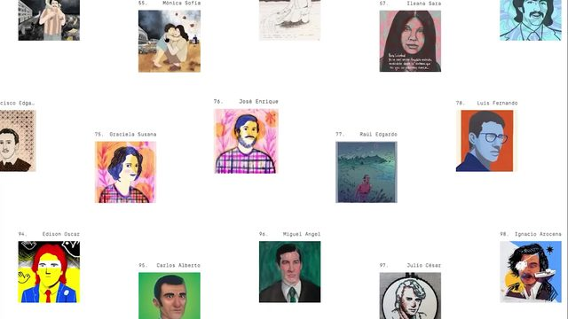

点封面在页面里播放（Vimeo / YouTube / X 需要代理；Vimeo 若没自动开始，再点一下播放键）。觉得好就点「喜欢」，有想法就写在下面的框里保存，我每天出日报前会读，存进偏好和审美库；会多找同类，但每天仍保持类型分散。
目录 01 How Many People Can You Feed with a Dollar?02 activate card interaction03 Davesocozy（Awwwards 当日最佳）04 Sequential Momentum（TCM IDs）05 林间小路06 197 Historias Ilustradas07 Food Forest – Ketelbroek（补课，2026）－ 剔除（看过画面后没过）拆 细拆：一块钱怎么被讲清楚——分屏、砸标签、投币变结果
01 知识讲解 MG 数据可视化
How Many People Can You Feed with a Dollar?
Kurzgesagt – In a Nutshell · YouTube 2026-11-19 【看过视频】
77.3 秒成片，完整看过（看片工具）
字体未识别（圆角无衬线粗体，带描边，接近 Poppins / Montserrat Black）
主色鲜黄、亮紫、深蓝，强调色洋红和亮绿
好在哪 77 秒竖版。开头一只手托着一沓美元，抛出标题。后面每个知识点只占一个画面：传送带上的饭从白米换成鱼和蔬菜，男孩表情跟着变；左右分屏对比 1920s 和 2020s 的甲状腺肿大比例；佝偻病直接画出弯曲的腿骨；1 美元掉进槽里，立刻堆成 27 美元。标签像砖块一样往下砸，大约 0.3 到 0.5 秒一块可借 讲对比和成本时，不要一段口播配一张静图。左右劈开看变化，数字标签错开砸下来，投进去的钱马上变成结果。配色可以比原片淡很多，硬投影和分屏留下。下面有细拆
展开全文
02 UI动效 3D质感 转场
activate card interaction
60fps（@60fpsdesign）× Plasma · X 2026-11-19 【看过画面（抽帧）】
抽了 12 帧（5.4 秒成片）
字体未识别（界面无衬线，像手机系统字）
全片无声；右下角有 60fps 水印
好在哪 5.4 秒。白底手机里，一张银色 Visa 卡先平放，再转到「Activate your card」。PIN 数字从键盘一个一个滚进卡片上的圆点，输完后卡片落到「Set your card PIN」，金属表面有一层很克制的反光。没有粒子，也没有额外装饰可借 做激活、验证这类状态切换时，让数字或进度直接走进卡片里，不要另弹一层窗口。卡片留一点金属厚度和软影子就够了
展开全文
03 代码动画 3D质感 转场
Davesocozy（Awwwards 当日最佳）
David Bara（@davesocozy）/ GSAP · X 2026-11-19 【看过画面（抽帧）】
抽了 12 帧（10.0 秒成片）
字体未识别（霓虹 OPEN 是手写感的无衬线；界面字很小）
three.js / React / WebGL，支持减弱动态效果
好在哪 10 秒网站展示。镜头在一间深色小店里慢慢转：桌上的绿垫和蓝盒、墙上的相框、橙色台灯，天花板上有「OPEN」霓虹。镜头推到一台老电视，里面在放黑白片子，灯和霓虹把柜子和相框分成前、中、后三层可借 用代码做空间展示时，先把一盏主灯和一块发光招牌放好，让柜子、画框、桌面分出前后层。镜头慢转即可，不必再加飘浮粒子
展开全文
04 转场 片头片尾 剪辑节奏
Sequential Momentum（TCM IDs）
MAMMAL · Motionographer 2026-11-19 【看过视频】
Vimeo 65.1 秒成片，完整看过（看片工具）
字体未识别（TCM 标志是几何无衬线；C 在各段里是笔刷、色块或圆点）
好在哪 65 秒，6 段独立片头，每段大约 10 秒。一个彩色的字母 C 跟着电影里的动作走：顺着秋千的弧线摆、贴着稻草人倒下的角度、当遮罩框住下楼梯的人。动作到顶点时，背景突然切成白底，这个 C 收进画面正中，和 T、M 拼成 TCM 标志，再变回标准黑字可借 段落结束时，不要另做一张静态片尾卡。让一个简单图形先跟着画面里的动作走，在动作重音切开背景，图形自己滑到中间组成标题
展开全文
05 代码动画 3D质感
林间小路
nomoreluca（@nomoreluca） · X 2026-11-19 【看过画面（抽帧）】
抽了 12 帧（14.3 秒成片）
无字。作者显示名是 011，账号 @nomoreluca
原帖只有视频，没有标题和演示链接
好在哪 14 秒。镜头沿着一条被两边土坡夹住的林间小路往前走，中间一条光斑打在落叶上，两边是暗的树干和树叶。没有字幕，也没有界面。three.js 官方转发。原帖没写作品名，这里按画面称呼可借 做气氛空镜时，先把主光打在一条小路上，左右用暗部夹住，比铺满雾和粒子更干净。镜头只往前走，不要左右甩
展开全文
06 字体版式 转场
197 Historias Ilustradas
++hellohello · Awwwards 2026-11 【看过画面（抽帧）】

197historiasilustradas.com ↗ 抽了 12 帧（11.2 秒，Awwwards 收录的 Grid Transition 片段）
字体未识别（窄的无衬线，接近人文主义字体；编号是等宽感的数字）
站点本身是乌拉圭记忆档案，封面用的是格栅总览，不放单人资料页
好在哪 约 11 秒的站点动效。白底上先铺开许多带编号的插画肖像，顶栏是 197 HISTORIAS ILUSTRADAS，中间可以切「格栅 / 列表」。点进一张，格子收成一篇图文故事，插画、旁白和资料栏分在左右，一次只看一个人可借 人物或案例很多时，先用整齐的格子让人看见全貌，点开再放大成一篇。顶栏分类一直留着，不要整页推翻重排
展开全文
07 3D质感 知识讲解 MG
Food Forest – Ketelbroek（补课，2026）
Freek Freriks（音乐 Wouter Messelink） · Motionographer 2026-10-21 【看过画面（抽帧）】
Vimeo
抽了 12 帧（33.2 秒成片）
字体未识别（片尾 logo 很小，未看清）
2026 年作品，本周新作不够 10 条，作补课收入
好在哪 33 秒。一支铅笔在方格纸上点一下，纸上长出一小丛草，再用圆规一转，草变成一棵小树，接着铺满整张图。镜头拉开，这片微型森林躺在书桌到餐盘上：旁边是茶杯、眼镜和笔，最后变成盘里的一道菜。光从侧面打来，纸、木头和叶子的质感都分得清可借 讲「一个想法变成结果」时，让它从图纸上长出来，而不是切走一张概念图再切一张成品。比例从小到大，旁边留下杯子和笔，观众才知道这是桌面上的模型
展开全文
剔除（看过画面后没过） Vox · 大部分是口播出镜，只有一段重力阱示意图，可学的动效和剪辑手法不够
Cleo Abram · 成片约 39 分钟，前 2 分钟主要是对谈，画面手法不够集中
Carter Ogunsola / Awwwards · 预告只有 4.6 秒卡片漂浮，印刷厂版式的核心手法在网站里，这段视频本身可学的不够
Bitmap Studio · 是 11 月 4 日 62 秒成片的 6 秒节选，超出近 7 天窗口，也不适合当完整作品看
TED-Ed（撰稿 Shannon Odell） · 荧光黄和品红铺满，卡通表情很满，不够克制
TED-Ed（撰稿 Lane Gunderman） · 手绘涂鸦风偏平，和 11-17 已推过的 TED-Ed 很像，今天已有 Kurzgesagt 做知识讲解
Art&Graft / 导演 Kyra Bartley · 10 月的角色叙事短片，质感好，但更接近精修角色动画，不太好直接借到讲解视频
DixonBaxi（@motionimo 转发） · 2024 年的品牌片被再次转发，不是近作
Bito Studio（@motionimo 转发） · 2024 年的观光品牌概念片被再次转发，不是近作
今日细拆 · 知识讲解
77 秒：每个知识点只用一个具体画面 【看过视频】 Kurzgesagt 今天这条竖版短片叫《How Many People Can You Feed with a Dollar?》。看片工具完整看完 77.3 秒。原片颜色很亮，黄、紫、洋红都比较冲，借的时候把饱和度压低就好。真正值得学的是结构：开头用一只手和一句问句钉住主题，后面每个知识点只给一个具体画面，3 到 4 秒切一次，标签像砖块一样砸下来，最后用一家人把所有包装接住，和开头的「喂饱」对上。
结构（77.3 秒） 0:00–0:03 黄底上，一只橘色的手托着一沓绿色美元，轻轻上下晃。紫字白边的标题出现：HOW MANY PEOPLE CAN YOU FEED WITH A DOLLAR? 0:03–0:10 下切到传送带。男孩坐在紫传送带后面，头顶是 1 in 3 / ~2.7 Billion People。盘子从左进来：白米、鱼肉、蔬菜沙拉。食物一换，男孩从笑变成没精神，用来说明「吃饱不等于营养够」 0:10–0:20 传送带变成生产线。盐被送进舱里，黄色的碘滴上去，弹出 $0.01–$0.05 per Person，再落到 IODIZED SALT 盒子里 0:20–0:27 竖向分屏：左边红底是 1920s、肿着脖子的男孩（>30%），右边是 2020s 健康的男孩（~2%）。画面左滑，带出家庭和大脑图标，一个黄人落下，IQ 从 100 跳到 115 0:28–0:32 金币从上面落下，弹一下叠成一叠，标签是 ~$0.18 per Person。金币退出，露出强化面粉、米和盐的包装 0:32–0:41 人物下半身变成透视：腿骨弯曲发光（Rickets / Vitamin D），再上移到绿色胸口和发红的心脏（Beri Beri / Vitamin B）。Fast Heartbeat、Shortness of Breath 这些症状标签像砖块一样往下砸 0:42–0:48 紫底上飘着病毒。一只手用写着 VITAMIN C 的剑把它劈开，接着用 VACCINE 盾挡住弹回来的病毒 0:48–0:58 一盒 REGULAR RICE 变成粉色的 REALLY NICE RICE，滑块从约 4% 拉到 50%。画面缩小，嵌进一张平面世界地图，South Asia 被标成粉色，数字快速滚过 1 亿 0:58–1:11 粉色小人，标签 ~$1.15 per Person。对角分屏：一边是生病，一边是关着的窗口。一张 1 美元掉进中间的槽，立刻堆成写着 $27 dollars 的钞堆 1:11–1:16 各种包装从上面落下，镜头下移，一家人把它们接住、抱满怀，停在这张全家福上 节奏 关键场景大约 3 到 4 秒切一次。需要看清对比的地方会多停一会：0:20 的年代分屏大约停 3 秒，结尾全家福大约停 4 秒。
加速出现在两处：0:38 起症状标签大约每 0.3 到 0.5 秒砸下一块；0:42 起挥剑和举盾每个动作只有 1 到 2 秒。真正花时间的是看清楚之后的停顿，不是转场本身。
转场 主要靠物体自己的运动把下一场带出来，很少用淡入淡出。0:03 钞票往下沉，镜头顺着切到传送带；0:24 左侧分屏向左滑出，带出右边的图标；0:54 滑块拉满后，整个画面缩小，变成世界地图上的一块。
分屏是这条里最干净的一招：中间一道缝把两个年代、两种身体状态同时放在眼前，观众不用靠旁白去脑补对比。
字、颜色和立体感 字体未识别。是圆角无衬线粗体，标题带白边和一层硬投影，感觉接近 Poppins Black 或 Montserrat Black，但不能确定 主色是鲜黄（约 #FFF022）、亮紫（约 #8C31FF）、深蓝（约 #1A237E）；强调色是洋红（约 #FF3377）和亮绿（约 #00C853）。原片很亮，借的时候建议整体降饱和 立体感不是靠真实光影，而是靠分层和「扁平厚度」：字、钞票、盒子下面都有一圈深色、没有羽化的硬投影；硬币和盾牌的侧面只用更暗一档的纯色画出厚度 对照动效实现规则 同一时刻只有一个焦点：要么是分屏对比，要么是正在砸下来的那一行标签，不会两件事一起抢 标签用短的弹簧回弹往下砸，不像飘着淡入。转场跟物体运动方向走，不用默认淡入淡出 结尾有明确的停住：一家人接住包装，停大约 4 秒，和开头的问句收在一起 在 Remotion / 代码里怎么做 先做「标签瀑布」。用一个数组存放症状或结论，每一条用 spring 从上方砸到固定位置，delay 按序号错开大约 5 帧。关键是下落要有一点重量和短回弹，不要写成匀速淡入。
再做「滑动分屏」。左右两场放在同一个容器里，用很短的 ease 把 translateX 从 0 拉到 -50% 或 -100%。难点是两场的结束帧和开始帧要对齐，滑动时不能露底。颜色层单独做，可以整体降饱和，不必照搬原片的黄和洋红。
放进鱼知道的片子里怎么用 比如讲「多喂一点数据，模型会准多少」。左边放一个灰的基础模型，右边用漏斗滴进彩色的行业数据，模型变亮，头顶砸下一个硬边标签。接着整屏向右滑，一张代表算力成本的卡片掉进槽里，下面立刻堆出「准确率」和「更少胡编」几块结果卡。对比用左右分屏，不要靠口播解释前后差别。
看 YouTube ↗ 横屏同一条 ↗
X（@60fpsdesign、@jh3yy、@sfc43588、@codegridweb、@motionimo、@awwwards、@codrops、@greensock、@threejs、@bitmapstudio、关键词搜索）、Codrops、Awwwards、Motionographer、Stash、Vimeo Staff Picks、Typewolf、It's Nice That、YouTube（Cleo Abram、Kurzgesagt、Vox、TED-Ed、Apple、Wendover、Bloomberg、Jared Owen、Animagraffs、MKBHD、Johnny Harris）